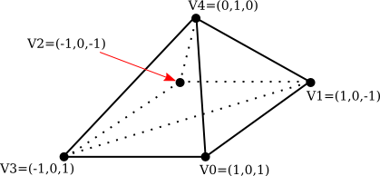

Section 5.2
Building Objects
In three.js, a visible object is constructed from a geometry and a material. We have seen how to create simple geometries that are suitable for point and line primitives, and we have encountered a variety of standard mesh geometries such as THREE.CylinderGeometry and THREE.IcosahedronGeometry. In this section, we will see how to create new mesh geometries from scratch. We'll also look at some of the other support that three.js provides for working with objects and materials.
5.2.1 Indexed Face Sets
A mesh in three.js is what we called an indexed face set in Subsection 3.4.1. In a three.js mesh, all the polygons are triangles. A geometry in three.js is an object of type THREE.Geometry. Any geometry object contains an array of vertices, represented as objects of type THREE.Vector3. For a mesh geometry, it also contains an array of faces, represented as objects of type THREE.Face3. Each object of type Face3 specifies one of the triangular faces of the geometry. The three vertices of the triangle are specified by three integers. Each integer is an index into the geometry's vertex array. The three integers can be specified as parameters to the THREE.Face3 constructor. For example,
var f = new THREE.Face3( 0, 7, 2 );
The three indices are stored as properties f.a, f.b, and f.c of the face object. As an example, let's see how to directly create a three.js geometry for this pyramid:

Note that the bottom face of the pyramid, which is a square, has to be divided into two triangles in order for the pyramid to be represented as a mesh geometry. If pyramidGeom is the geometry object for this pyramid, then pyramidGeom.vertices is the vertex array, and pyramidGeom.faces is the face array. With that in mind, we can define:
var pyramidGeom = new THREE.Geometry();
pyramidGeom.vertices = [ // array of Vector3 giving vertex coordinates
new THREE.Vector3( 1, 0, 1 ), // vertex number 0
new THREE.Vector3( 1, 0, -1 ), // vertex number 1
new THREE.Vector3( -1, 0, -1 ), // vertex number 2
new THREE.Vector3( -1, 0, 1 ), // vertex number 3
new THREE.Vector3( 0, 1, 0 ) // vertex number 4
];
pyramidGeom.faces = [ // array of Face3 giving the triangular faces
new THREE.Face3( 3, 2, 1 ), // first half of the bottom face
new THREE.Face3 3, 1, 0 ), // second half of the bottom face
new THREE.Face3( 3, 0, 4 ), // remaining faces are the four sides
new THREE.Face3( 0, 1, 4 ),
new THREE.Face3( 1, 2, 4 ),
new THREE.Face3( 2, 3, 4 )
];
Note that the order of the vertices on a face is not completely arbitrary: They should be listed in counterclockwise order as seen from in front of the face, that is, looking at the face from the outside of the pyramid.
This pyramid geometry as given will work with a MeshBasicMaterial, but to work with lit materials such as MeshLambertMaterial or MeshPhongMaterial, the geometry needs normal vectors. If the geometry has no normal vectors, Lambert and Phong materials will appear black. It is possible to assign the normal vectors by hand, but you can also have three.js compute them for you by calling methods in the geometry class. For the pyramid, this would be done by calling
pyramidGeom.computeFaceNormals();
This method computes one normal vector for each face, where the normal is perpendicular to the face. This is sufficient if the material is using flat shading; that is, if the material's flatShading property is set to true. The flatShading property was discussed in Subsection 5.1.3.
Flat shading is appropriate for the pyramid. But when an object is supposed to look smooth rather than faceted, it needs a normal vector for each vertex rather than one for each face. A Face3 has an array of three vertex normals. They can be set by hand, or Three.js can compute reasonable vertex normals for a smooth surface by averaging the face normals of all faces that share a vertex. Just call
geom.computeVertexNormals();
where geom is the geometry object. Note that the face normals must already exist before computeVertexNormals is called, so that usually you will call geom.computeVertexNormals() immediately after calling geom.computeFaceNormals(). A geometry that has face normals but not vertex normals will not work with a material whose flatShading property has the default value, false. To make it possible to use smooth shading on a surface like the pyramid, all of the vertex normals of each face should be set equal to its face normal. In that case, even with smooth shading, the pyramid's side will look flat. Standard three.js geometries such as BoxGeometry come with correct face and vertex normals.
The face normal for an object, face, of type THREE.Face3 is stored in the property face.normal. The vertex normals are stored in face.vertexNormals, which is an array of three Vector3.
With a full set of normal vectors, the pyramid is ready to be used with any of the mesh materials that we have covered, but it looks a little boring with just one color. It's possible to use several colors on one mesh. To do that, you can supply an array of materials to the mesh object constructor, instead of a single material. This makes it possible to apply different materials to different faces. For example, here is how to make a cube with different materials on its six sides:
var cubeGeom = new THREE.BoxGeometry(10,10,10);
var cubeMaterials = [
new THREE.MeshPhongMaterial( { color: "red" } ), // for the +x face
new THREE.MeshPhongMaterial( { color: "cyan" } ), // for the -x face
new THREE.MeshPhongMaterial( { color: "green" } ), // for the +y face
new THREE.MeshPhongMaterial( { color: "magenta" } ), // for the -y face
new THREE.MeshPhongMaterial( { color: "blue" } ), // for the +z face
new THREE.MeshPhongMaterial( { color: "yellow" } ) // for the -z face
];
var cube = new THREE.Mesh( cubeGeom, cubeMaterials );
For this to work with a geometry, each face of the geometry needs a "material index." The material index of a face is an integer that is an index into the array of materials. The faces of a BoxGeometry have appropriate indices. Note that a box geometry has 12 faces, since each rectangular side is divided into two triangular faces. The two triangles that make up a rectangular side have the same material index. (BoxGeometry is the only standard geometry that I can find that comes with non-zero material indices. The default value for the material index is zero.)
Suppose that we want to use different materials on each side of the pyramid that was created above. For that to work, each face needs a material index, which is stored in a property of the face named materialIndex. For the pyramid, the first two faces in the array of faces make up the square base of the pyramid. They should probably have the same material index. The following code assigns material index 0 to the first two faces and material indices 1, 2, 3, and 4 to the other four faces:
pyramidGeom.faces[0].materialIndex = 0;
for (var i = 1; i <= 5; i++) {
pyramidGeom.faces[i].materialIndex = i-1;
}
This code is from the sample program threejs/MeshFaceMaterial.html. The program displays a cube and a pyramid using multiple materials on each object. Here's what they look like:
There is another way to assign a different color to each face of a mesh object: It is possible to store the colors as properties of the face objects in the geometry. You can then use an ordinary material on the object, instead of an array of materials. But you also have to tell the material to use the colors from the geometry in place of the material's color property.
There are several ways that color might be assigned to faces in a mesh. One is to simply make each face a different solid color. Each face object has a color property that can be used to implement this idea. The value of the color property is an object of type THREE.Color, representing a color for the entire face. For example, we can set the face colors of the pyramid with
pyramidGeom.faces[0].color = new THREE.Color(0xCCCCCC);
pyramidGeom.faces[1].color = new THREE.Color(0xCCCCCC);
pyramidGeom.faces[2].color = new THREE.Color("green");
pyramidGeom.faces[3].color = new THREE.Color("blue");
pyramidGeom.faces[4].color = new THREE.Color("yellow");
pyramidGeom.faces[5].color = new THREE.Color("red");
To use these colors, the vertexColors property of the material must be set to the value THREE.FaceColors; for example:
material = new THREE.MeshLambertMaterial({
vertexColors: THREE.FaceColors,
shading: THREE.FlatShading
});
The default value of the property is THREE.NoColors, which tells the renderer to use the material's color property for every face.
A second way to apply color to a face is to apply a different color to each vertex of the face. WebGL will then interpolate the vertex colors to compute colors for pixels inside the face. Each face object has a property named vertexColors whose value should be an array of three THREE.Color objects, one for each vertex of the face. To use these colors, the vertexColors property of the material has to be set to THREE.VertexColors.
The following demo uses vertex colors and face colors on an icosahedral approximation for a sphere. The colors can be animated. In the color animation, each of the colors that is used on the object cycles through the set of possible hues. The positions of the vertices can also be animated.
5.2.2 Curves and Surfaces
In addition to letting you build indexed face sets, three.js has support for working with curves and surfaces that are defined mathematically. Some of the possibilities are illustrated in the sample program threejs/curves-and-surfaces.html, and I will discuss a few of them here.
Parametric surfaces are the easiest to work with. A parametric surface is defined by a mathematical function f(u,v), where u and v are numbers, and each value of the function is a point in space. The surface consists of all the points that are values of the function for u and v in some specified ranges. For three.js, the function is a regular JavaScript function that returns values of type THREE.Vector3. A parametric surface geometry is created by evaluating the function at a grid of uv points. This gives a grid of points on the surface, which are then connected to give a polygonal approximation of the surface. In three.js, the values of u and v are always in the range 0.0 to 1.0. The geometry is created by a constructor
new THREE.ParametricGeometry( func, slices, stacks )
where func is the JavaScript function and slices and stacks determine the number of points in the grid; slices gives the number of subdivisions of the interval from 0 to 1 in the u direction, and stacks, in the v direction. Once you have the geometry, you can use it to make a mesh in the usual way. Here is an example, from the sample program:

This surface is defined by the function
function surfaceFunction( u, v ) {
var x,y,z; // A point on the surface, calculated from u,v.
// u and v range from 0 to 1.
x = 20 * (u - 0.5); // x and z range from -10 to 10
z = 20 * (v - 0.5);
y = 2*(Math.sin(x/2) * Math.cos(z));
return new THREE.Vector3( x, y, z );
}
and the three.js mesh that represents the surface is created using
var surfaceGeometry = new THREE.ParametricGeometry(surfaceFunction, 64, 64); var surface = new THREE.Mesh( surfaceGeometry, material );
Curves are more complicated in three.js (and, unfortunately, the API for working with curves is not very consistent). The class THREE.Curve represents the abstract idea of a parametric curve in two or three dimensions. (It does not represent a three.js geometry.) A parametric curve is defined by a function of one numeric variable t. The value returned by the function is of type THREE.Vector2 for a 2D curve or THREE.Vector3 for a 3D curve. For an object, curve, of type THREE.Curve, the method curve.getPoint(t) should return the point on the curve corresponding to the value of the parameter t. However, in the Curve class itself, this function is undefined. To get an actual curve, you have to define it. For example,
var helix = new THREE.Curve();
helix.getPoint = function(t) {
var s = (t - 0.5) * 12*Math.PI;
// As t ranges from 0 to 1, s ranges from -6*PI to 6*PI
return new THREE.Vector3(
5*Math.cos(s),
s,
5*Math.sin(s)
);
}
Once getPoint is defined, you have a usable curve. One thing that you can do with it is create a tube geometry, which defines a surface that is a tube with a circular cross-section and with the curve running along the center of the tube. The sample program uses the helix curve, defined above, to create two tubes:
The geometry for the wider tube is created with
tubeGeometry1 = new THREE.TubeGeometry( helix, 128, 2.5, 32 );
The second parameter to the constructor is the number of subdivisions of the surface along the length of the curve. The third is the radius of the circular cross-section of the tube, and the fourth is the number of subdivisions around the circumference of the cross-section.
To make a tube, you need a 3D curve. There are also several ways to make a surface from a 2D curve. One way is to rotate the curve about a line, generating a surface of rotation. The surface consists of all the points that the curve passes through as it rotates. This is called lathing. This image from the sample program shows the surface generated by lathing a cosine curve. (The image is rotated 90 degrees, so that the y-axis is horizontal.) The curve itself is shown above the surface:

The surface is created in three.js using a THREE.LatheGeometry object. A LatheGeometry is constructed not from a curve but from an array of points that lie on the curve. The points are objects of type Vector2, and the curve lies in the xy-plane. The surface is generated by rotating the curve about the y-axis. The LatheGeometry constructor takes the form
new THREE.LatheGeometry( points, slices )
The first parameter is the array of Vector2. The second is the number of subdivisions of the surface along the circle generated when a point is rotated about the axis. (The number of "stacks" for the surface is given by the length of the points array.) In the sample program, I create the array of points from an object, cosine, of type Curve by calling cosine.getPoints(128). This function creates an array of 128 points on the curve, using values of the parameter that range from 0.0 to 1.0.
Another thing that you can do with a 2D curve is simply to fill in the inside of the curve, giving a 2D filled shape. To do that in three.js, you can use an object of type THREE.Shape, which is a subclass of THREE.Curve. A Shape can be defined in the same way as a path in the 2D Canvas API that was covered in Section 2.6. That is, an object shape of type THREE.Shape has methods shape.moveTo, shape.lineTo, shape.quadraticCurveTo and shape.bezierCurveTo that can be used to define the path. See Subsection 2.6.2 for details of how these functions work. As an example, we can create a teardrop shape:
var path = new THREE.Shape(); path.moveTo(0,10); path.bezierCurveTo( 0,5, 20,-10, 0,-10 ); path.bezierCurveTo( -20,-10, 0,5, 0,10 );
To use the path to create a filled shape in three.js, we need a ShapeGeometry object:
var shapeGeom = new THREE.ShapeGeometry( path );
The 2D shape created with this geometry is shown on the left in this picture:
The other two objects in the picture were created by extruding the shape. In extrusion, a filled 2D shape is moved along a path in 3D. The points that the shape passes through make up a 3D solid. In this case, the shape was extruded along a line segement perpendicular to the shape, which is the most common case. The basic extruded shape is shown on the right in the illustration. The middle object is the same shape with "beveled" edges. For more details on extrusion, see the documentation for THREE.ExtrudeGeometry and the source code for the sample program.
5.2.3 Textures
A texture can be used to add visual interest and detail to an object. In three.js, an image texture is represented by an object of type THREE.Texture. Since we are talking about web pages, the image for a three.js texture is generally loaded from a web address. Image textures are usually created using the load function in an object of type THREE.TextureLoader. The function takes a URL (a web address, usually a relative address) as parameter and returns a Texture object:
var loader = new THREE.TextureLoader(); var texture = loader.load( imageURL );
A texture in three.js is considered to be part of a material. To apply a texture to a mesh, just assign the Texture object to the map property of the mesh material that is used on the mesh:
material.map = texture;
The map property can also be set in the material constructor. All three types of mesh material (Basic, Lambert, and Phong) can use a texture. In general, the material base color will be white, since the material color will be multiplied by colors from the texture. A non-white material color will add a "tint" to the texture colors. The texture coordinates that are needed to map the image to a mesh are part of the mesh geometry. The standard mesh geometries such as THREE.SphereGeometry come with texture coordinates already defined.
That's the basic idea—create a texture object from an image URL and assign it to the map property of a material. However, there are complications. First of all, image loading is "asynchronous." That is, calling the load function only starts the process of loading the image, and the process can complete sometime after the function returns. Using a texture on an object before the image has finished loading does not cause an error, but the object will be rendered as completely black. Once the image has been loaded, the scene has to be rendered again to show the image texture. If an animation is running, this will happen automatically; the image will appear in the first frame after it has finished loading. But if there is no animation, you need a way to render the scene once the image has loaded. In fact, the load function in a TextureLoader has several optional parameters:
loader.load( imageURL, onLoad, undefined, onError );
The third parameter here is given as undefined because that parameter is no longer used. The onLoad and onError parameters are callback functions. The onLoad function, if defined, will be called once the image has been successfully loaded. The onError function will be called if the attempt to load the image fails. For example, if there is a function render() that renders the scene, then render itself could be used as the onLoad function:
var texture = new THREE.TextureLoader().load( "brick.png", render );
Another possible use of onLoad would be to delay assigning the texture to a material until the image has finished loading. If you do change the value of material.map, be sure to set
material.needsUpdate = true;
to make sure that the change will take effect when the object is redrawn.
A Texture has a number of properties that can be set, including properties to set the minification and magnification filters for the texture and a property to control the generation of mipmaps, which is done automatically by default. The properties that you are most likely to want to change are the wrap mode for texture coordinates outside the range 0 to 1 and the texture transformation. (See Section 4.3 for more information about these properties.)
For a Texture object tex, the properties tex.wrapS and tex.wrapT control how s and t texture coordinates outside the range 0 to 1 are treated. The default is "clamp to edge." You will most likely want to make the texture repeat in both directions by setting the property values to THREE.RepeatWrapping:
tex.wrapS = THREE.RepeatWrapping; tex.wrapT = THREE.RepeatWrapping;
RepeatWrapping works best with "seamless" textures, where the top edge of the image matches up with the bottom edge and the left edge with the right. Three.js also offers an interesting variation called "mirrored repeat" in which every other copy of the repeated image is flipped. This eliminates the seam between copies of the image. For mirrored repetition, use the property value THREE.MirroredRepeatWrapping:
tex.wrapS = THREE.MirroredRepeatWrapping; tex.wrapT = THREE.MirroredRepeatWrapping;
The texture properties repeat and offset control the scaling and translation that are applied to the texture as texture transformations. (There is no texture rotation.) The values of these properties are of type THREE.Vector2, so that each property has an x and a y component. For a Texture, tex, the two components of tex.offset give the texture translation in the horizontal and vertical directions. To offset the texture by 0.5 horizontally, you can say either
tex.offset.x = 0.5;
or
tex.offset.set( 0.5, 0 );
Remember that a positive horizontal offset will move the texture to the left on the objects, because the offset is applied to the texture coordinates not to the texture image itself.
The components of the property tex.repeat give the texture scaling in the horizontal and vertical directions. For example,
tex.repeat.set(2,3);
will scale the texture coordinates by a factor of 2 horizontally and 3 vertically. Again, the effect on the image is the inverse, so that the image is shrunk by a factor of 2 horizontally and 3 vertically. The result is that you get two copies of the image in the horizontal direction where you would have had one, and three vertically. This explains the name "repeat," but note that the values are not limited to be integers.
This demo lets you view some textured three.js objects. The "Pill" object in the demo, by the way, is a compound object consisting of a cylinder and two hemispheres.
Suppose that we want to use an image texture on the pyramid that was created at the beginning of this section. In order to apply a texture image to an object, WebGL needs texture coordinates for that object. When we build a mesh from scratch, we have to supply the texture coordinates as part of the mesh's geometry object.
A geometry object such as pyramidGeom in the example has a property named faceVertexUvs to hold texture coordinates. ("UV" refers to the coordinates on an object that are mapped to the s and t coordinates in a texture.) The value of faceVertexUvs is an array, where each element of the array is itself an array of arrays; in most cases only the element faceVertexUvs[0] is used, but additional sets of uv coordinates are used in some advanced applications. The value of faceVertexUvs[0] is itself an array, with one element for each face in the geometry. The data stored for each face is, again, an array: faceVertexUvs[0][N] is an array containing one pair of coordinates for each of the three vertices of face number N. Finally, each pair of texture coordinates in that array is represented as an object of type THREE.Vector2.
The pyramid has six triangular faces. We need an array of three objects of type Vector2 for each face. The coordinates have to be chosen to map the image in a reasonable way onto the faces. My choice of coordinates maps the entire texture image onto the square base of the pyramid, and it cuts a triangle out of the image to apply to each of the sides. It takes some care to come up with the correct coordinates. I define the texture coordinates for the pyramid geometry as follows:
pyramidGeometry.faceVertexUvs = [[ [ new THREE.Vector2(0,0), new THREE.Vector2(0,1), new THREE.Vector2(1,1) ], [ new THREE.Vector2(0,0), new THREE.Vector2(1,1), new THREE.Vector2(1,0) ], [ new THREE.Vector2(0,0), new THREE.Vector2(1,0), new THREE.Vector2(0.5,1) ], [ new THREE.Vector2(1,0), new THREE.Vector2(0,0), new THREE.Vector2(0.5,1) ], [ new THREE.Vector2(0,0), new THREE.Vector2(1,0), new THREE.Vector2(0.5,1) ], [ new THREE.Vector2(1,0), new THREE.Vector2(0,0), new THREE.Vector2(0.5,1) ], ]];
Note that this is a three-dimensional array.
The sample program threejs/textured-pyramid.html shows the pyramid with a brick texture. Here is an image from the program:

5.2.4 Transforms
In order to understand how to work with objects effectively in three.js, it can be useful to know more about how it implements transforms. I have explained that an Object3D, obj, has properties obj.position, obj.scale, and obj.rotation that specify its modeling transformation in its own local coordinate system. But these properties are not used directly when the object is rendered. Instead, they are combined to compute another property, obj.matrix, that represents the transformation as a matrix. By default, this matrix is recomputed automatically every time the scene is rendered. This can be inefficient if the transformation never changes, so obj has another property, obj.matrixAutoUpdate, that controls whether obj.matrix is computed automatically. If you set obj.matrixAutoUpdate to false, the update is not done. In that case, if you do want to change the modeling transformation, you can call obj.updateMatrix() to compute the matrix from the current values of obj.position, obj.scale, and obj.rotation.
We have seen how to modify obj's modeling transformation by directly changing the values of the properties obj.position, obj.scale, and obj.rotation. However, you can also change the position by calling the function obj.translateX(dx), obj.translateY(dy), or obj.translateZ(dz) to move the object by a specified amount in the direction of a coordinate axis. There is also a function obj.translateOnAxis(axis,amount), where axis is a Vector3 and amount is a number giving the distance to translate the object. The object is moved in the direction of the vector, axis. The vector must be normalized; that is, it must have length 1. For example, to translate obj by 5 units in the direction of the vector (1,1,1), you could say
obj.translateOnAxis( new THREE.Vector3(1,1,1).normalize(), 5 );
There are no functions for changing the scaling transform. But you can change the object's rotation with the functions obj.rotateX(angle), obj.rotateY(angle), and obj.rotateZ(angle) to rotate the object about the coordinate axes. (Remember that angles are measured in radians.) Calling obj.rotateX(angle) is not the same as adding angle onto the value of obj.rotation.x, since it applies a rotation about the x-axis on top of other rotations that might already have been applied.
There is also a function obj.rotateOnAxis(axis,angle), where axis is a Vector3. This function rotates the object through the angle angle about the vector (that is, about the line between the origin and the point given by axis). The axis must be a normalized vector.
I should emphasize that the translation and rotation functions modify the position and rotation properties of the object. That is, they apply in object coordinates, not world coordinates, and they are applied as the first modeling transformation on the object when the object is rendered. For example, a rotation is world coordinates can change the position of an object, if it is not positioned at the origin. However, changing the value of the rotation property of an object will never change its position.
(Rotation is actually even more complicated. The rotation of an object, obj, is actually represented by the property obj.quaternion, not by the property obj.rotation. Quaternions are mathematical objects that are often used in computer graphics as an alternative to Euler angles, to represent rotations. However, when you change one of the properties obj.rotation or obj.quaterion, the other is automatically updated to make sure that both properties represent the same rotation. So, we don't need to work directly with the quaternions.)
There is one more useful method for setting the rotation: obj.lookAt(vec), which rotates the object so that it is facing towards a given point. The parameter, vec, is a Vector3, which must be expressed in the object's own local coordinate system. (For an object that has no parent, or whose ancestors have no modeling transformations, that will be the same as world coordinates.) The object is also rotated so that its "up" direction is equal to the value of the property obj.up, which by default is (0,1,0). This function can be used with any object, but it is most useful for a camera.
5.2.5 Loading JSON Models
Although it is possible to create mesh objects by listing their vertices and faces, it would be difficult to do it by hand for all but very simple objects. It's much easier, for example, to design an object in an interactive modeling program such as Blender (Appendix B). Three.js has utility functions for loading models from files, and it comes with scripts that can be used to export objects from Blender and other 3D modeling programs to a file format that three.js can read. (In the three.js download, look in the exporters folder inside the utils folder.)
Three.js has its own file format, in which models are specified using JSON, a common format for representing JavaScript objects. This is the file format that is produced by the export scripts. The class THREE.JSONLoader can be used to read model descriptions from such files. There are some other loaders, which work with other file formats, but I will only discuss JSONLoader here.
If loader is an object of type THREE.JSONLoader, you can use its load() method to start the process of loading a model:
loader.load( url, callback );
The first parameter is a URL for the file that contains the model. JSON models are stored as actual JavaScript code, so the file will usually have a name ending in ".js". The second parameter, callback, is a function that will be called when the loading is done. The loading is asynchronous; loader.load() starts the process and returns immediately. It is the responsibility of the callback function to use the data from the file to create a three.js Object3D and to add it to the scene. The callback function takes two parameters, geometry and materials, which contain the information needed to create the object; the parameters represent the data that has been read from the file. The materials parameter is a material or an array of materials that can be used as the second parameter in a mesh object constructor. (Of course, you could also just use your own material instead of the material from the file.)
Here, then, is a pair of functions that can be used to load a JSON model from a specified url and add it to the scene (although in general, you probably want to do something more complicated with the object):
function loadModel( url ) { // Call this function to load the model.
var loader = new THREE.JSONLoader();
loader.load( url, modelLoaded ); // Start load, call modelLoaded when done.
}
function modelLoaded( geometry, material ) { // callback function for loader
var object = new THREE.Mesh( geometry, material );
scene.add(object);
render(); // (only need this if there is no animation running)
}
The sample program threejs/json-model-viewer.html uses JSONLoader to read model descriptions. It can display seven different objects. I created one of the objects using Blender. The other objects came with three.js. Five of the objects use a simple white material; the "horse" and "stork" use colors that are provided as vertex colors (not materials) in the model file.
I'll also mention that JSON models can define simple keyframe animations. To do this, the file includes alternative sets of vertices for each keyframe (three.js calls them "morph targets"). Three.js has several classes that support animation, including THREE.AnimationMixer, THREE.AnimationAction, and THREE.AnimationClip. I won't discuss animation here, but these three classes are used to animate the horse and stork models in this demo: